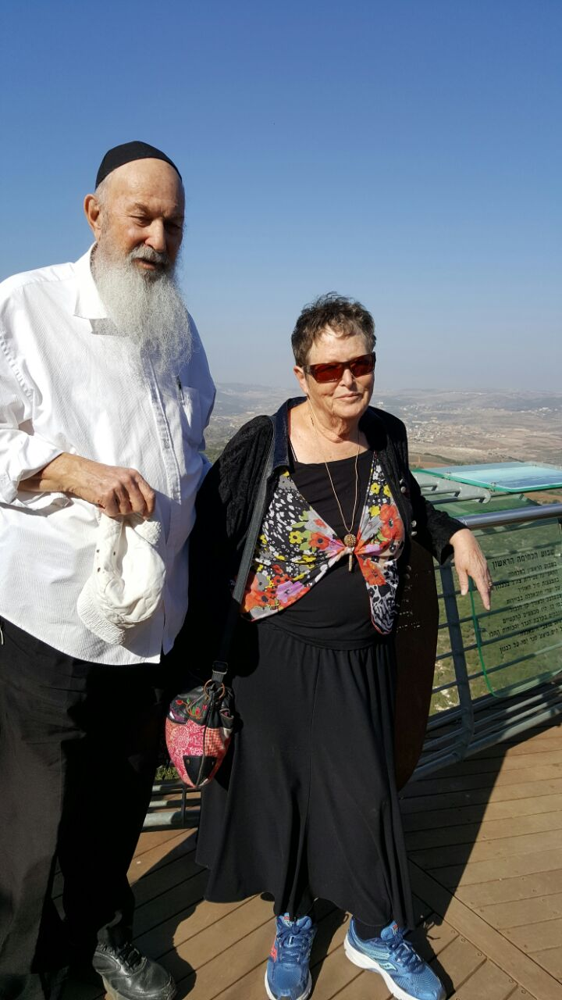
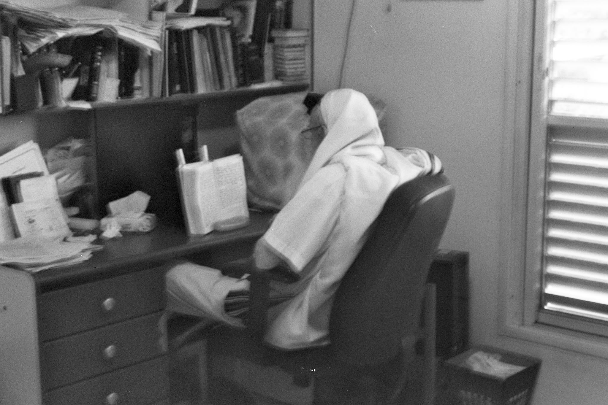
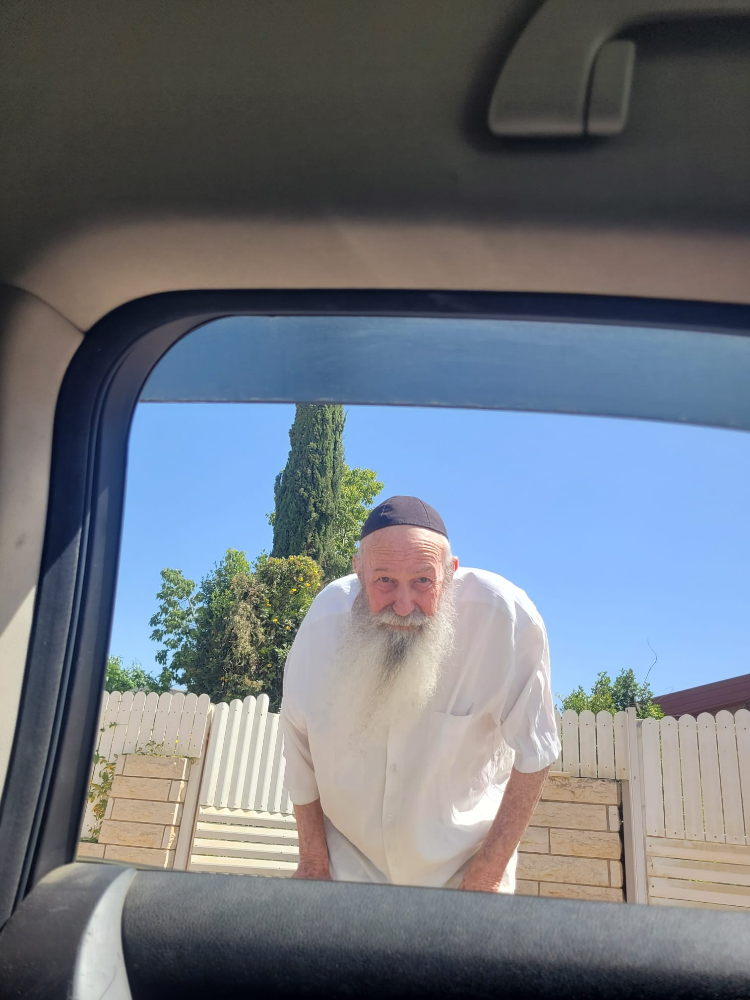
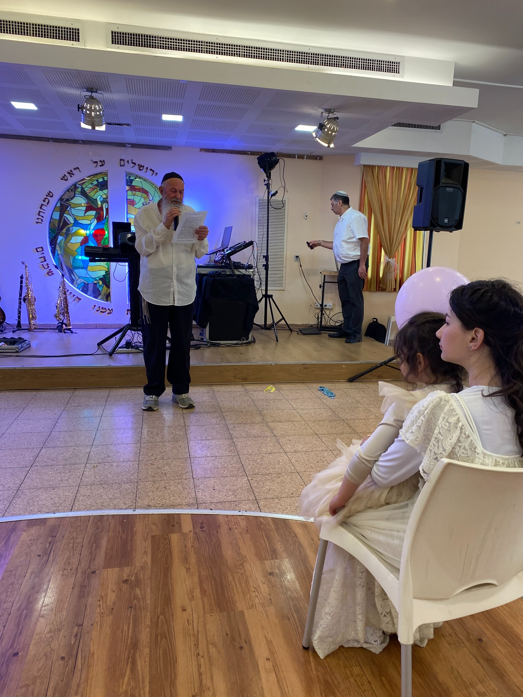
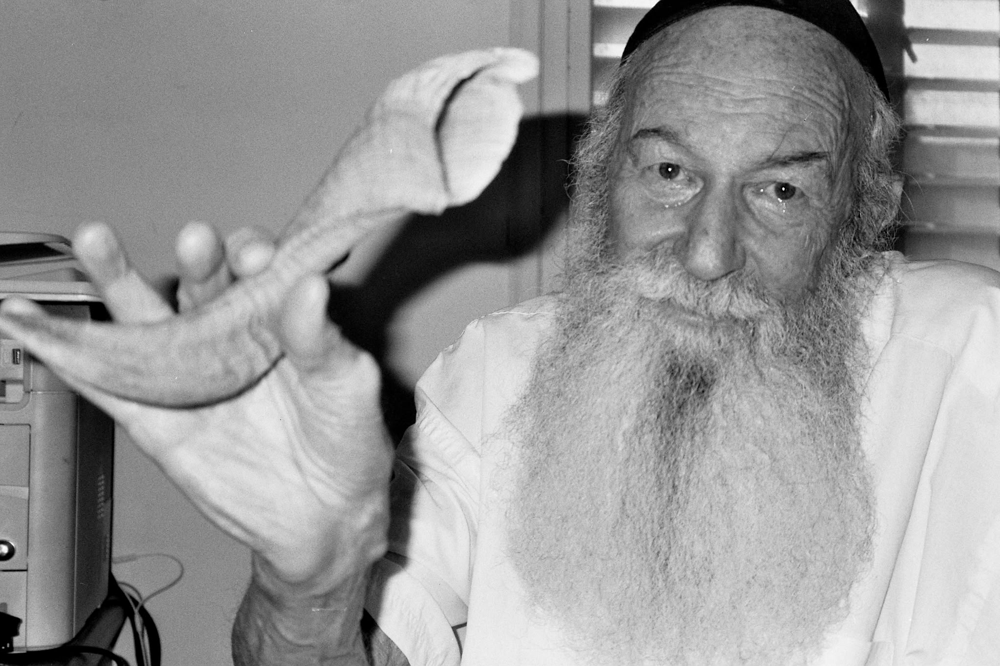
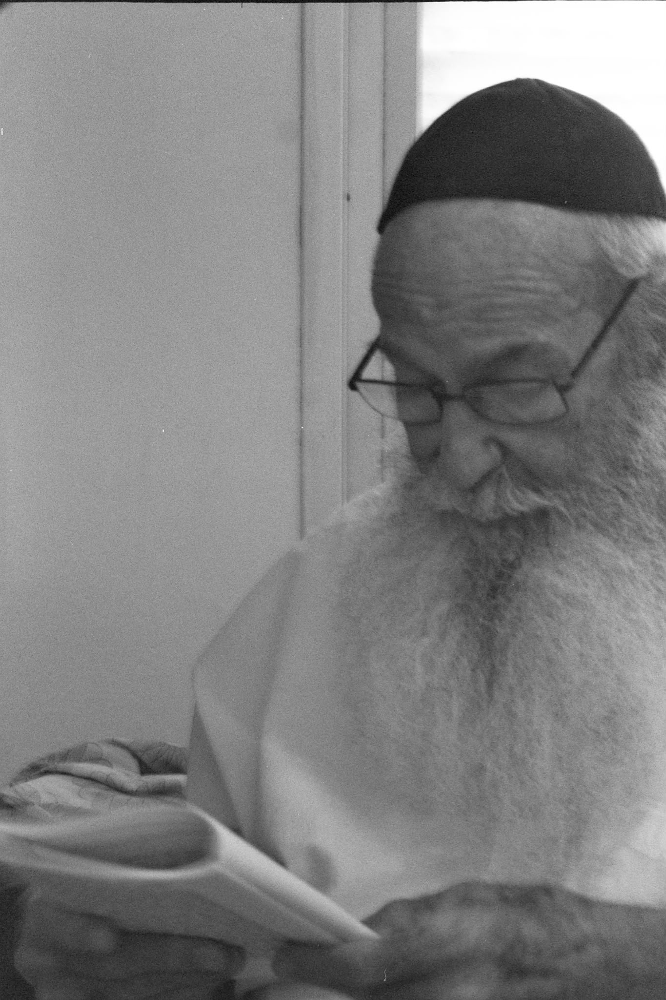
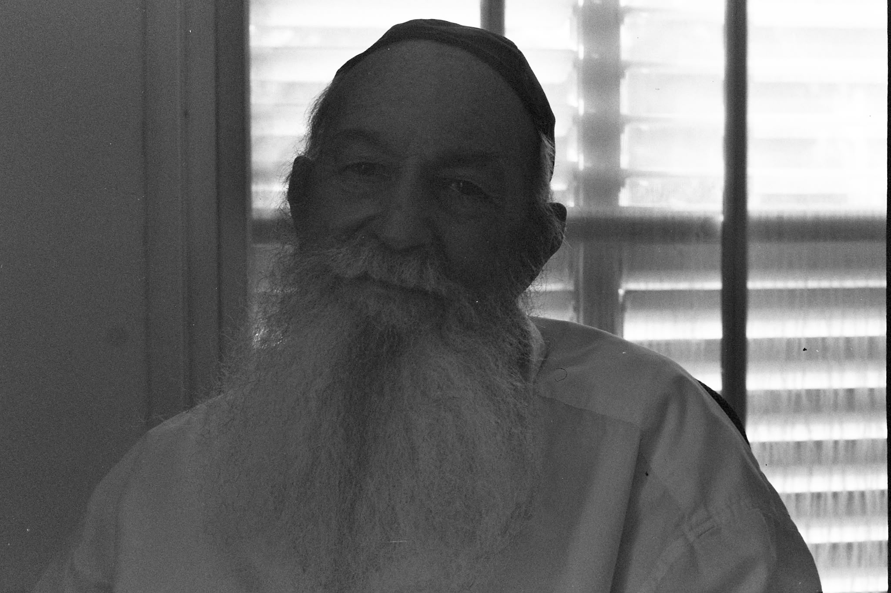

מבחר שיעורי התבוננות — חלק ב׳
פרד״ס – רמז ופשט; מיהו יהודי ושמחת פורים; מלכות והנהגה; וכללות ההשתלשלות בארבעת המספרים הראשונים.
לקריאה ישירה בגל עיני ←מודד, איש ציבור, תלמיד, עורך ומפיץ תורה — מסע חיים שהפך למפעל של שימור והנגשת תורת החסידות והקבלה לדורות.
מילדות בשכונת בורוכוב בגבעתיים, דרך קריירה מקצועית בכירה במדידת הארץ, ועד עשרות שנים של לימוד, עריכה והפצת תורה.
ר׳ עמרם לידא נולד וגדל בשכונת בורוכוב, שלימים הייתה לחלק מגבעתיים. הוריו עלו לארץ מפולין כחלוצים, ובבית שבו גדל המסורת נתפסה בעיקר כחלק מן המורשת והפולקלור. שנים לאחר מכן תיאר כיצד כבר מנעוריו היה שוחר ידע וקורא נלהב — תכונה שהובילה אותו בהדרגה גם אל ספרות חז״ל ואל עולם התורה.
בבגרותו הוכשר כמודד מוסמך ועבד במקצוע במשך עשרות שנים. הקריירה המקצועית שלו התפתחה עד לתפקיד מנהל מחוז הדרום במרכז למיפוי ישראל, הגוף הממשלתי האחראי על מדידה ומיפוי המדינה. בכך עסק, פשוטו כמשמעו, במדידת הארץ — עבודה מדויקת, שיטתית ואחראית, תכונות שניכרו בהמשך גם בדרך שבה ניגש לעריכת ספרים.
בסביבות גיל שלושים וחמש, כשהיה נשוי ואב לשניים, החל תהליך חיפוש רוחני מעמיק. הוא התחיל לפקוד בית כנסת, ללמוד תורה ולקבל על עצמו מצוות בהדרגה. לדבריו, נקודת מפנה מיוחדת הייתה המפגש עם שיעור בתורת הנסתר: שם גילה עבור עצמו שיהדות איננה אוסף של פעולות נפרדות, אלא מערכת שלמה, בנויה ומקושרת, היכולה להעניק משמעות כוללת לחיים.
בהמשך נעשה מתלמידיו הקרובים של הרב יצחק גינזבורג שליט״א. המשפחה עברה למיתר שבנגב, ובמשך שנים רבות הפך הבית ומקום עבודתו למעין בית מלאכה שקט של תורה: שיעורים מוקלטים הושמעו שוב ושוב, תומללו, סודרו, נערכו ונבנו לכדי טקסטים וספרים.
עמרם לא הסתפק בלימוד לעצמו. חלק מרכזי מחייו הוקדש לכך שגם אחרים יוכלו ללמוד. עבודתו הייתה סבלנית ומדוקדקת: להקשיב לכל משפט, להבין את רצף הרעיונות, לנסחם בבהירות, להוסיף מבנה וסדר — ולהפוך תורה שבעל פה לאוצר כתוב ונגיש. מתוך העבודה הזאת נולדו עשרות כרכים של ״מבחר שיעורי התבוננות״ וכן סדרת ״חסדי דוד הנאמנים״.
את עבודת השכתוב והעריכה עשה בהתנדבות ומתוך תחושת שליחות, והמשיך בה עד ימיו האחרונים. המשפט שהיה מזוהה עמו — ״עיקר העבודה עוד לפנינו״ — מבטא היטב את האופן שבו ראה את מפעלו: התורה שכבר נערכה היא רק התחלה; הייעוד הוא שהלימוד ימשיך, יעבור הלאה ויפעל בדורות הבאים.


מן הקלטת השיעור אל הטקסט, מן הטקסט אל הספר, ומן הספר אל הלומד.
עבודתו של עמרם הייתה הרבה מעבר להקלדה. היא דרשה האזנה חוזרת, הבנת המבנה הפנימי של השיעור, חלוקה לפרקים ולנושאים, חיבור בין מקורות והפיכת דיבור חי לטקסט שאפשר ללמוד ממנו לאורך שנים.
גל עיני מציג את עמרם לידא כעורך של כרכים רבים, והספרים עצמם זמינים לקריאה מקוונת. כך מפעל העריכה שלו ממשיך לחיות ולהיות נגיש גם כיום.
מפעל העריכה של ר׳ עמרם לידא כולל עשרות כרכים. הכרכים של ״מבחר שיעורי התבוננות״ מסודרים כאן לפי סדר מספרי החלקים באותיות עבריות, וכל כרטיס מוביל ישירות לגרסה הקריאה בארכיון גל עיני.
פרד״ס – רמז ופשט; מיהו יהודי ושמחת פורים; מלכות והנהגה; וכללות ההשתלשלות בארבעת המספרים הראשונים.
לקריאה ישירה בגל עיני ←חכמה, בינה ודעת; חכמת הצירוף; מצוות פדיון שבויים; עשרה סוגי מודעות; מלכות ועולם הדיבור.
לקריאה ישירה בגל עיני ←אשליות; גלגולי נשמות; לולב הגזול והיבש; הוראת המספרים ומידת ההשתוות; סוד העיגול; ציון וירושלים.
לקריאה ישירה בגל עיני ←מחזור השנה דרך כוחות הנפש: ניסן–אמונה, אייר–שמחה, סיון–תמימות, תמוז–יראה, אב–שפלות, אלול–רחמים, תשרי–אמת ועוד.
לקריאה ישירה בגל עיני ←עשרה יקרים; פרד״ס וטנת״א; שפוך חמתך; מדע וגאולה; ספירת העומר; טלפתיה וכוח המחשבה.
לקריאה ישירה בגל עיני ←נמנע הנמנעות, נושא הפכים וכל יכול; חושי הנפש; כוחות חב״ד בנפש וסוד השבת; שיעור ראשון בקבלה.
לקריאה ישירה בגל עיני ←מכניקת הקוונטים ושאלת המציאות; גלים וחלקיקים; תופעות לא־מקומיות; יסודות האמונה, אחדות ה׳, השגחה ובחירה.
לקריאה ישירה בגל עיני ←תמים תהיה עם ה׳ אלקיך — חלק ג׳; סדרת שיעורים בענייני נגינה; התיקון הכללי; פרק שירה.
לקריאה ישירה בגל עיני ←שש אישות הן — אור ואש בתורה; תמים תהיה עם ה׳ אלקיך — חלק ד׳; רשב״י ויציאה מן הגלות ברחמים.
לקריאה ישירה בגל עיני ←תפילת הבוקר בסוד אריה; נעילת המנעלים; תפילה בסוד קורבן; כוח התפילה; קריאת שמע; אחור וקדם צרתני; נישואין.
לקריאה ישירה בגל עיני ←תמים תהיה עם ה׳ אלקיך — חלק ה׳; ומשה היה רועה; זמן חרותנו; יציאת מצרים מצד הקב״ה.
לקריאה ישירה בגל עיני ←תפיסה הולוגרפית של המציאות; יסודות בתורה ומדע; פורים; סוד ההבטה; כיבוש האזורים החשוכים בנפש; נישואין ומעשה מרכבה.
לקריאה ישירה בגל עיני ←סדרת שיעורים על ״זה ספר תולדות אדם״ — גנטיקה, מספרי אהבה, חתך הזהב, צירופי אותיות ושכפול עצמי.
לקריאה ישירה בגל עיני ←״עבדו את ה׳ בשמחה״ — סדרת שיעורים על השמחה, העתים, ששת אלפי השנים, מזמור לתודה ושמחת תורה.
לקריאה ישירה בגל עיני ←חמישה שיעורים לתלמידי ישיבות: כללי השערים ואופן ההתבוננות; כוחות חב״ד בנפש; גשם נדבות; השבת אבדה; ביד לשון.
לקריאה ישירה בגל עיני ←סדרת שיעורים הכוללת סיפורי צדיקים, ר׳ זושא מאניפולי, עשרת טעמי השופר של רס״ג, ״אשרי איש שלא ישכחך״ ונספחים.
לקריאה ישירה בגל עיני ←קבלת האריז״ל לאור החסידות, על פי הספר ״חסדי דוד״ לרבי דוד מאגאר זצ״ל. הסדרה כוללת שנים־עשר חלקים, וכולם מקושרים כאן ישירות לעמוד הקריאה המתאים בגל עיני.
מבוא לאדם קדמון ולעולמות אצילות, בריאה, יצירה ועשיה; יסודות מבנה העולמות והיחסים ביניהם.
לקריאה ישירה בגל עיני ←עיון פנימי באדם קדמון, אורות אח״פ, עקודים, נקודים וברודים ותהליך התהוות הכלים.
לקריאה ישירה בגל עיני ←העמקה בתהליך התהוות והשתלשלות הכלים וביחסים שבין אור, כלי ומבנה העולמות.
לקריאה ישירה בגל עיני ←עולמות העקודים והנקודים, יצירת הכלים, ראשית עולם התהו וההכנה לשבירה ולתיקון.
לקריאה ישירה בגל עיני ←עולם התהו ועולם התיקון, כללות ופרטות, שם מ״ה החדש ובניין עולם האצילות המתוקן.
לקריאה ישירה בגל עיני ←עתיקא קדישא, רדל״א וחמשת הספקות; עיון עמוק במדרגות העליונות של הכתר.
לקריאה ישירה בגל עיני ←פנימיות וחיצוניות, עיבור־יניקה־מוחין, תיקוני גולגלתא, קריאת שמע והולדת נשמות חדשות.
לקריאה ישירה בגל עיני ←שבעת מלכי התהו, השבירה, בירור הניצוצות והמעבר ממצב של תהו ליחסים מתוקנים.
לקריאה ישירה בגל עיני ←סוד הזיכרון והזכירה, השופר, תיקוני דיקנא והכנות לייחודים על פי קבלת האריז״ל.
לקריאה ישירה בגל עיני ←סוד הצלמים, האחוריים ושבירת המידות; תהליכי שבירה, נפילה וראשית התיקון.
לקריאה ישירה בגל עיני ←עיון במשמעות הצמצום על פי הקבלה והחסידות וביחס בין גילוי אלוקי, הסתר ומציאות העולם.
לקריאה ישירה בגל עיני ←ביאור טעמי הבריאה בחז״ל ובקבלה, משמעותם בעבודת ה׳ והקשר שלהם לאותיות שם הוי׳.
לקריאה ישירה בגל עיני ←מתוך הארכיון המשפחתי — לימוד, עבודה, שיחה, משפחה ורגעים מן השנים השונות.





ראיון עם ר׳ עמרם לידא מתוך התכנית ״אור חדש״, לצד ארכיון מתפתח של סרטונים, הספדים, ניגונים ועדויות.
האתר נועד לשמר את סיפור חייו, את מפעלו ואת החומרים שהותיר אחריו — ולהעמיד אותם לרשות בני המשפחה, החברים, הלומדים והדורות הבאים.